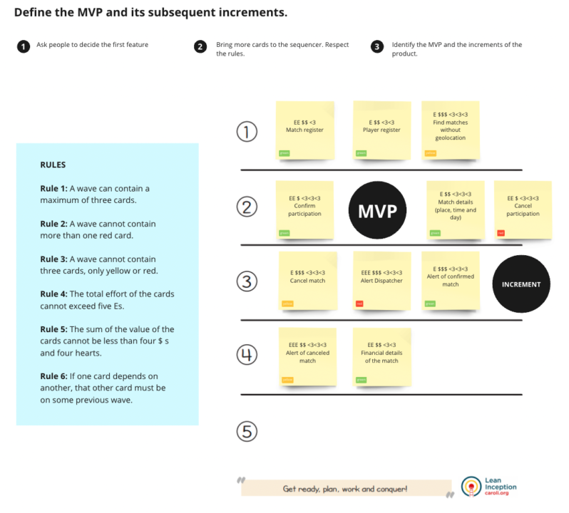

Citadel: Building a SaaS solution that simplifies security and compliance in the cloud
How might we make the accreditation process simpler, faster, and cheaper than it actually is, leaving customers to focus on what matter most: their business?

The Citadel Business
Citadel is a Software as a Service (SaaS) solution for managing your Amazon Web Services (AWS) cloud infrastructure. It allows customers to remove the complexity and easily create, manage and maintain resources whilst being audit-ready, highly secure and compliant with industry standards such as SOC 2, ISO 27001, HIPAA, PCI DSS, and CDR (Consumer Data Right).
Market Analysis
Financial Sector Industry:
Key sub-segments include payments, verification, wealth and investing, and more. Businesses typically range from startups to SMBs with 10–200 employees. Revenue distribution: < 1M (33%), 1M-5M (25%), 5M-10M (8%), 10M-25M (15%), 25M (7%), not applicable (12%). Capital: 41% raised capital in the past year, 21% within 1-2 years, and 30% have yet to raise capital. Geographical distribution: NSW (60%), VIC (22%), QLD (10%), SA (5%), WA/Auckland (1% each). Examples of customers: Spriggy, Stake, Zestmoney, and more. Note: Expansion into the open energy and open telecom sectors is anticipated to drive future demand.
HealthTech Industry
Sub-segments include Awareness, Treatment, Prevention, and Clinic Workflow. Typical businesses range from startups to SMBs with 10–200 employees and turnover between 1M - 25M. Over 400 companies have conducted initial public offerings. Predominantly located in Sydney and Melbourne, with presence in Adelaide and Perth. Customer examples: Coviu, Medinet, Perx Health, and more.
The Challenge
How might we make the accreditation process simpler, faster, and cheaper than it actually is, leaving customers to focus on what matters most: their business?
The Design Process
We've decided to set up and run a new business, following the best practices that startups have been using by applying the three lenses of innovation: desirability, viability, and feasibility.
Desirability
I became aware of customer complaints during my time at DNX Solutions. If we want to address these complaints, a logical first step would be to listen to these customers and it was exactly what I did.
As part of this phase, I considered the anatomy of an interview guide.

Interviewed personas included:
- Current customers: to address their experiences and identify opportunities.
- Potential customers: to understand decision-making processes, concerns, and pain points.
- Partners: such as Auditors, ISVs, and Consulting firms, integral to project delivery.
- AWS: a crucial stakeholder for scaling up the product quickly.
- Employees: to gather insights on automation possibilities and project experiences.
Data Analysis & Validations
After gathering and analysing all qualitative and quantitative data from market analysis and research phases, I started to materialise our learnings and discoveries.At that moment, I was able to complete our first design tools, such as personas and customer journeys, and validate our problem statement, which, fortunately, has changed nothing.
At a high level, they are:
- CEOs of startups and SMBs
- Technical Decision Makers
- Developers and Operators
- Partners: Auditors and ISVs
Persona Example
Customer Journey Example
Service Blueprint Example

Problem Statement
How might we make the accreditation process simpler, faster, and cheaper than it actually is, leaving customers to focus on what matter most: their business?
Viability
For Citadel, a viable product means profitability aligned with our goals. After analysing FinTechs and HealthTechs, I prompted the team to develop our business model, focusing on key aspects like value proposition and target audience. We also created our product vision and canvas together.
Business Model Canvas
Product Vision
Does / Does Not / It is / It is Not
Feasibility
On the feasibility side, we have analysed all the critical aspects of building the solutions we intended. However, as most of the solutions are already delivered by DNX Solutions, for instance, we knew it wouldn’t be a concern. The more in-depth analysis we made was related to AWS APIs as part of the solutions to create a cloud infrastructure in the AWS cloud without the need to access the AWS console for it.
The Citadel Design Process
Lean Inception
I proposed running a Lean Inception Workshop for the team. This one-week workshop combines design thinking and lean startup principles to align people and define the minimum viable product (MVP). It guides the team through various steps and activities, covering business, UX, and technology aspects:
- Product Vision
- Product Is-Is Not-Does Not Do
- Persona
- Feature Brainstorm
- Tech, UX, and Business Review
- User Journeys
- Journeys and Features
- Sequencer
- MVP Canvas
- Showcase
Technical, Business & UX Review
We looked over the ideas on our Miro board. It was a chance to talk about the technical, business, and UX aspects of each feature. We clarified things and dealt with any disagreements or doubts that came up.
Sequencer
The sequencer assists in organising and viewing the features and the incremental validation of the product. There are rules to follow that helped me to ensure we are building our product sprints in the right way
MVP Canvas
MVP Canvas is a visual chart that helps the team to align and define the MVP, the simplest version of the product that can be made available to the business (minimum product) and that can be effectively used and validated by the end user (viable product).
The Ongoing Process
The ongoing process is set up, and I began organising the design steps. Key aspects include user flows, prototyping, and handing off to the product team.
Upstream process
Everything I explained until this point is considered upstream projects/processes. The name is because I was more focused on discoveries and validations and it’s the precursor to the product (development team).
User Flow
To finalise the upstream phase, based on the features sequencer we created in the Lean Inception Workshop, I start to create the user flow for each feature, see examples below.
Prototyping & Usability Testing
After validating the user flow, I created the prototype on Figma. This was tested with customers for improvement, marking the iteration process. View prototype examples in Figma.
Downstream Process
Features approved by the user? Time to build it. I use ClickUp to hand over tasks to the developers. They're familiar with the plan from the Lean Inception Workshop, which simplifies things for me.
We followed sprints and had daily syncs to track progress and commitments. After each sprint, we used the sequencer to plan the next set of features. While developers built and released features, I focused on generating new ones for later development. This was our continuous product design and development process.